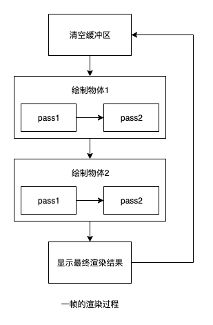

多光源光照结果是逐光源光照结果的线性叠加，因此为每个光源执行一次渲染得到图元的输出颜色，然后将它们相加在一起就是多光源的光照结果
光照计算为每个光照执行一个pass，将光照信息（光源颜色，光源位置，光源到像素的方向）都放置在指定的变量中（就像顶点数据一样的语义寄存器），着色器直接访问这些变量就可以得到当前光源的信息了。Unity在幕后每个光源执行此过程并叠加得到最终颜色
surf着色器提供了高级的着色器抽象层次，只需要使用指令指明这个表面使用那种光照模型就可以了（也可以自定义光照模型，即光照函数）。但是使用顶点/片段着色器就必须手动计算光照信息，实现特定的光照模型，即着色器最终输出的像素颜色包含对光照的计算，尽管Unity已经大大简化了手动计算光照的过程
编写vert/frag着色器或者surf着色器都要遵守一定都程序，才能掌握如何编写一个自定义shader
frag只用来计算某个位置上的片段的最终颜色（纹理、雾、光照），位置信息都在vert中计算。frag只输出一个颜色值作为结果，vert则输出模型最终显示在屏幕上的最终位置，以及相关的顶点数据，这些顶点数据将为图元的每个片段进行插值。逐像素光照本质上就是顶点数据插值的一个应用。在顶点上计算光照颜色，然后为每个片段进行插值
以vert/frag着色器为例，编写一个自定义着色器要按照一下程序思考
每一帧渲染时，Unity将当前场景中的物体按照材质shader的渲染顺序排序(RenderQueue)，确定那些mesh先渲染，那些mesh后渲染，但是每个开启ztest的mesh渲染时还会考虑z缓冲。因此物体渲染有两个顺序，一个是按物体排序（shader.RenderQueue），另一个是像素值的z值顺序
不了解渲染流水线的工作原理就永远无法入门shader。任何只讲语法不讲渲染管线的文章都无法解释清楚shader
渲染流水线的最终目的是生成或者说渲染一张二维纹理。流水线的各个阶段都是独立无状态的，所有阶段都可以并行执行
每当CPU渲染一个模型时，会把它拆分成一个一个mesh。每个mesh有自己的材质，依次渲染这些mesh。每当渲染一个mesh时，先用它的material设置渲染管线的渲染状态，设置图元状态（点，线段，三角形，三角带，四边形）然后将mesh包含的顶点输入给GPU，GPU根据当前图元状态将输入的顶点依次组合成图元，执行顶点着色器，进行MVP变换，光栅化，执行片段着色器，输入到渲染缓存。
几何阶段的一个重要任务或者说主要任务就是把顶点坐标变换到屏幕空间（通常自定义的着色器中顶点着色器只执行这个任务）
DrawCall命令GPU使用当前的渲染状态进行渲染
CPU调用GPU绘制一个图元的过程
一个drawcall就是一个命令，发起方是cpu，接收方是gpu。这个命令仅仅指向一个需要给渲染的图元列表。没有任何渲染状态信息。因为渲染状态在drawcall之前完成，渲染状态可以用来渲染多个drawcall发送的图元。给定一个drawcall，gpu就会根据当前的渲染状态和发送来的图元数据，输出到屏幕上显示的那些漂亮的像素
渲染管线的输入是图元信息，而不是模型。模型是应用程序的概念，用来组织保存一组相关的图元数据。应用阶段负责将模型分解为图元，然后对每个图元或一组图元调用依次drawcall
一次渲染需要很多数据，但是通常一组图元的很多渲染属性都是相同的（例如使用哪个顶点着色器或片段着色器程序，使用哪些纹理，使用哪些光源）每渲染一组图元都把这些相同的数据从cpu传递到gpu是没有意义的，而共享属性是绝大多数情况，因此OpenGL被设计为基于状态的渲染管线，使得相同的状态在不同的输入图元之间共享。应用程序调用OpenGL api设置渲染管线的状态，然后就可以一次次调用drawcall将图元发送给管线，直到应用程序调用OpenGL api修改一些渲染管线状态，接下来的图元将使用新的状态进行渲染。每个图元都使用当前的管线状态进行渲染
Unity中material保存的就是渲染管线状态。每次渲染mesh时，Unity首先使用material设置当前渲染管线的状态（使用的着色器程序，使用的纹理，使用的光源等等），然后将mesh记录的图元发送到渲染管线进行渲染。渲染本身是基于状态的，即任何图元渲染都使用当前的状态。但是Unity使用material使管线呈现出对每个mesh都是独立渲染的，两个mesh渲染是无关的。要注意Unity与OpenGL渲染管线这种感官上的差异。这种差异的存在是因为每次渲染一个mesh，Unity使用它的material重置渲染管线状态，使得之前模型渲染使用的状态不会影响这个模型的渲染，因此看起来两个模型的渲染是独立无关的。这也是为什么最佳实践是使用尽可能少的material，使用最少的material渲染最多的mesh，使mesh尽可能使用相同material。重置渲染状态时将导致cpu和gpu之间大量的数据传输（尤其是纹理数据，而新的着色器程序又使得gpu的指令缓存失效），这对比gpu的执行速度是巨大的瓶颈。而在保持渲染状态下，渲染大量图元的load则小的多，顶点的数据非常少（坐标、uv、normal）。上千个顶点的数据还不到使用的纹理数据的1/10。这就像linux程序设计中，用户空间到系统空间的上下文切换是非常耗时的，涉及大量数据的入栈出栈以保存和恢复现场，尤其是在大量频繁的呼叫系统调用时，因此linux程序设计的一个原则是尽可能少的呼叫系统调用。
顶点着色器需要完成的主要工作有坐标变换（模型空间到屏幕空间）和逐顶点光照（顶点光照需要在顶点着色器中完成，使得光照数值可以为每个片段进行插值）。除此以外，还可以输出后续阶段需要的数据
渲染管线中虽然顶点着色器与片段着色器是可编程的，但是整个阶段是固定的（硬件固定，即只是其中的几个阶段/步骤是可编程的）。因此任何一次渲染（只要调用drawcall）都要执行整个流水线的过程（从头到尾），无论是渲染不同的物体，还是一个物体渲染多次，每次渲染都将计算的像素输出到渲染缓存中。但是gpu是高度优化的，只要程序是在gpu中执行的，渲染200个还是渲染2000个三角形没有太大区别
即使一个物体渲染多次（multipass），每个pass只有片段着色器不同，每次渲染时顶点着色器仍然会执行（这是硬件流水线，着色器程序只是其中插入的代码片段），最终计算的像素每次都会写入到渲染缓冲区中
无论在顶点着色器中怎样改变顶点位置，一个最基本的顶点着色器必须完成的核心工作就是把顶点从模型空间转换到齐次剪裁空间。在顶点着色器中经常看到这样的代码o.pos = mul(UNITY_MVP, v.position)，就是再做顶点着色器的核心工作
游戏引擎以一定帧率渲染画面。每一帧渲染包含从清空的缓冲区开始大量渲染管线的调用累加的结果，即每一次渲染都把计算出的像素写入到对应的渲染缓冲区中，无论是不同的物体，还是相同的物体渲染多次。此外，每一次渲染可以依赖之前的渲染结果，尤其是深度缓冲区
为了在片段着色器中对纹理进行采样，通常会在顶点着色器中输出每个顶点的纹理坐标，然后经过光栅化阶段对三角形网格的3个顶点对应的纹理坐标进行插值就可以得到三角形覆盖的每个片段的纹理坐标了
栅格化输出的图元覆盖的每个片段的各种顶点数据（坐标，uv，法向量，其他数据），片段着色器使用每个片段的顶点数据计算这个片段的最终颜色。片段着色器输出的就是一张2d图像。但是它的维度不一定与视口维度相同，视口可以设置不同的维度，使得最终渲染的2d纹理被缩放以适应视口大小。可以认为是使用一个和视口大小相同的quad对最终渲染的纹理进行采样
如果一个像素通过了所有测试，就需要把这个片元的颜色值与已经存储在颜色缓冲区中的颜色进行合并(blend)。逐片元合并阶段不是可编程的，但却是高度可配置的，可以设置很多中合并方法
透明效果=深度测试+深度写入
渲染过程是一个物体接着一个物体绘制到屏幕上的。每当渲染一个物体时，颜色缓冲区中往往已经有了上次渲染之后的结果。合并要解决的问题是这次渲染得到的像素完全覆盖掉之前的还是和之前的进行混合。对于不透明的物体可以关闭混合操作。如果没有开启混合功能，就会直接使用片元的颜色覆盖掉缓冲区中的颜色。
为了避免我们看到正在光栅化的像素，GPU使用双缓冲的策略。对场景的渲染是在离屏的后置缓冲区中进行的。一旦场景已经被渲染到后置缓冲区，GPU就会交互后置缓冲区和前置缓冲区。前置缓冲区中的内容是正在显示在屏幕上的图像。这保证了我们看到的图像是完整连续的
更多时候我们只需要在一个Unity Shader中设置一些输入，编写顶点和片段着色器，设置一些状态就可以达到大部分常见的屏幕效果
OpenGL中一切都是状态，不仅着色器、纹理、光源是状态，顶点数据也是状态。顶点数据就像着色器、纹理、光源等状态一样被发送给GPU中并保存。DrawCall只是发出绘制命令，告诉GPU以何种图元（点、线、三角形、三角带、四边形）绘制顶点数组状态中的指定范围[start, end]的顶点，例如在将包含9个顶点数据的数组发送到GPU之后，可以以不同的图元将相同的顶点以不同方式绘制：
gl.drawArray(GL.TRIANGLE, 0, 9); //以三角形模式绘制0～9之间的顶点，将绘制3个三角形
gl.drawArray(GL.LINE, 0, 6); //以线段模式绘制0～6之间的顶点，将绘制3个线段
gl.drawArray(GL.QUAD, 0, 8); //以四边形模式绘制0～8之间的顶点，将绘制2个四边形
一个mesh可以将顶点发送到GPU之后，使用不同的material进行多次渲染，每次渲染时只改变material中的渲染状态（例如着色器），而顶点不需要重新发送
所谓状态就是如果不去更新它们，它们就始终保持不变。因此可以连续调用drawcall，每次只修改需要改变的状态而保持其他状态（包括顶点数组）不变
尤其是设置不同的着色器，把当前的图元重新渲染一次，这就是Unity shader中pass个概念。Unity使用material设置渲染状态，将第一个shader程序设置为当前渲染管线着色器程序，将mesh设置为当前图元数据，调用drawcall渲染一次，然后保持图元数据和其他渲染状态不变，将第二个pass对应的shader程序设置为当前的shader程序，调用drawcall将网格图元再渲染一次（计算出的像素会混合/覆盖当前颜色缓冲区中的已存在的很可能是上一次pass计算的像素），依次类推，相当于把mesh渲染了n次，这与渲染n个模型，每个模型具有相同的mesh和渲染状态，但只有shader不同，每个shader对应之前的每个pass。multipass就是将mesh渲染n次，每个pass一次，只是每次渲染时unity只需要更新当前渲染管线的shader，而不需要重新设置所有的渲染状态和图元数据
如果没有渲染流水线，CPU需要等到GPU完成上一个渲染任务时才能再次发送渲染命令。让CPU和GPU并行工作的方法就是使用一个命令缓冲区。命令缓冲区中的命令有很多种，而DrawCall只是其中一种。其他命令包括改变渲染状态。改变渲染状态往往更加耗时
OpenGL本身是基于状态的，但是Unity以Mesh封装模型，每次渲染模型时都使用materail重置渲染状态，因此在Unity中看起来每个模型的渲染都是独立的，无状态的。这样Unity每次调用DrawCall之前，都需要设置渲染状态和发送顶点数据。而GPU的渲染速度原因大于CPU提交命令的速度。如果DrawCall太多，CPU就会把大量时间花费在提交DrawCall（重置渲染状态）上面。例如1000个使用不同material的三角形就需要发送1000次设置渲染状态命令，1000次发送一个三角形的顶点数据命令，1000次DrawCall命令以通知GPU渲染。而如果1000个三角形只使用一个material，则只需要发送一个设置渲染状态命令，一个发送顶点数据命令（1000个三角形一同发送），一个DrawCall命令就可以将1000个三角形同时绘制完毕
因此优化DrawCall需要
要得到出色的游戏画面需要包括shader在内的所有渲染流水线阶段的共同参与才可以完成。设置适当的渲染状态，使用合适的混合函数，开启还是关闭深度测试/深度写入
开发者声明properties是为了在材质面板上能够方便地调整各种材质属性，在shader中访问这些名字，显示名称出现在面板上，需要为每个属性指定一个默认值，这些默认值是在把shader赋给某个材质时，材质面板显示的默认值，即初始值
Properties语义块包括了一系列属性，这些属性将会出现在材质面板上，并且可以在shader中访问。为了在shader中访问这些属性，我们需要在cg代码片段中定义和这些属性相匹配的变量（类型和名字，就像以插槽与接口，将材质面板中可以设置的变量与shader程序中能访问的变量关联起来）。需要说明的是，可以只在cg代码中声明shader要使用的变量，即使不在Properties语义块中声明这些变量，shader仍然可以使用这些变量，只是这些变量不能在材质面板上调整，需要在脚本中像shader传递这些属性material.SetFloat("_OnlyCgVar", 1f)。因此在Cg代码中定义shader要使用的变量才是根本，Properties语义块只是允许这些属性出现在材质面板上
Unity Shader变量就是glsl中的uniform变量，即应用程序传递给流水线的全局变量。在一次drawcall渲染中，顶点着色器和片段着色器处理的顶点/片段数据都是与每个图元相关的，即针对每个图元都是不同的。但是uniform定义的全局变量与图元顶点无关，因此在整个渲染过程中对每个图元都是相同的（即处理顶点1/片段1与顶点2/片段2时，uniform变量都是相同的）
每个Unity Shader文件可以包含多个SubShader语义块，但最少要有一个。当Unity加载这个shader时，会扫描所有的SubShader语义块，然后选择首个能在目标平台上执行的SubShader。如果没有任何SubShader支持的话，Unity就会使用Fallback语义块指定的Unity Shader（如果Fallback也没有的话就会像没有shader一样显示紫色）。SubShader中的每个pass定义了一次渲染，所有的pass都会执行一次，按照出现的顺序
状态设置和标签Tag既可以在subshader中声明，也可以在pass中声明。在subshader中声明时应用于所有的pass。可以在一个pass中显式声明渲染状态来覆盖subshader中的声明，使得不同的pass可以使用不同的渲染状态
Tag就像GameObject的tag一样，只是用来查找具有指定tag的shader，本身并没有特殊意义，使用tag的程序决定如何处理查找到的shader。Unity声明来许多被它以不同方式处理的shader tag。Shader中经常设置以下Tag
| 标签 | 说明 | 示例 |
|---|---|---|
| Queue | Unity查询Shader的这个tag的value，将物体分类到不同的队列，相同队列的物体一起渲染，不同队列按照标签值从小到大的顺序进行渲染。这可以控制物体的渲染顺序，使得所有透明的物体在不透明的物体后面渲染，也可以自定义渲染队列控制物体的渲染顺序。后渲染的物体将像素写入颜色缓存时，缓冲中已经具有了之前渲染的物体的像素数据了 | Tags {"Queue"="Transparent"} |
| RenderType | Unity使用这个标签进行shader替换功能。Unity查找指定RenderType值的shader的Mesh，将其材质的shader替换为指定的shader，使得具有特定RenderType Tag的material都以指定的shader渲染。 | Tags {"RenderType"="Opaque"} |
| DisableBatching | 一些subshader在使用unity的批处理时会出现问题，例如使用了模型空间下的坐标进行顶点动画。这是可以通过该标签来直接指明是否对该subshader使用批处理 | Tags {"DisableBatching"="True"} |
| ForceNoShadowCasting | 控制使用该subshader的物体是否会投射阴影 | Tags {"ForceNoShadowCasting"="True"} |
| IgnoreProjector | 如果该标签为True，那么使用该subshader的物体将不会受Projector的影响。通常用于半透明物体。Unity内置了Projector功能，Unity ShaderLab包含了对Projector的支持，因此默认情况下shader即支持Projector投影，除非使用这个tag告诉Unity忽略Projector | Tags {"IgnoreProjector"="True"} |
| CanUseSpriteAtlas | 当该SubShader用于精灵sprites时，将该标签设置为false(TODO??) | Tags {"CanUseSpriteAtlas"="True"} |
| PreviewType | 指明材质面板如何预览材质。默认显示球形材质，可以设置为"Plane", "SkyBox" | Tags {"PreviewType"="Plane"} |
ShaderLab提供了一系列设置渲染状态的指令（最常用的4个状态指令：Cull，ZTest，ZWrite，Blend），这些指令就是设置OpenGL渲染管线的状态的，一旦设置后所有的渲染状态都使用这些状态，直到下次渲染管线状态被改变
除了普通的Pass，Unity Shader还支持一些特殊Pass
可以在Pass中定义Pass的名称，通过这个名称，可以使用ShaderLab的UsePass命令来直接使用其他UnityShader中的Pass。这就是Shader程序中代码复用的方式：UsePass "MyShader/MYPASS"。Unity内部会把所有Pass的名称转换为大写，因此在使用UsePass时必须使用大写的Pass名字
surf着色器写在SubShader中，因为surf本身就会分解为多个pass。顶点/片段着色器写在Pass中。
surf着色器的价值在于Unity为我们处理了很多光照细节，使得我们可以不需要再关心这些烦人的细节
渲染流水线是拥有全局状态的机器，为它设置状态（顶点数据，纹理，光源），给它以指令（DrawCall），它就产生相应的输出，仅此而已。它具有很多状态，不同的状态下以不同的方式工作，同时产生很多输出（深度缓冲、颜色缓冲）。它提供了接口设置状态(gl.vertexArray, gl.texture, gl.light)，发送指令(gl.drawArray)，以及读取输出（颜色缓冲、深度缓冲）。它只是一个流水线，并不是动画系统或者渲染引擎等高级事物，如何使用它们是应用程序的事情。例如如果不清空各种缓冲区，所有调用DrawCall绘制的物体就会出现在共享的相同的缓冲区中。从屏幕上看就是绘制的物体越来越多。若想呈现动画效果，必须以一定的帧率清空缓冲区并重新绘制，这就是应用程序的指责（例如游戏引擎）。如果只想渲染3d静态画面则完全不需要清空缓冲区，也就没有帧率的概念。
就游戏引擎而言，一帧指的是在清空缓冲区之前在渲染流水线上执行的所有绘制的结果的叠加。因为没有清空缓冲区，而每次渲染都在向缓冲区中写入数据（渲染结果）。因此就必须有一种机制将产生的数据与缓冲区中已有的数据叠加成一个数据作为缓冲区的新数据。这种叠加对于颜色缓冲区就是Blend，对于深度缓冲区就是Min
一帧画面的产生是在不清空缓冲区的情况下渲染流水线多次渲染在缓冲区上叠加的结果。这些多次渲染既包括不同物体的渲染，还包括同一个物体的多次渲染。为了得到期望的或者特殊的效果，shader程序需要考虑流水线的全局状态（缓冲区）、多次渲染之间全局状态的变化（时序）、不同物体之间的渲染顺序等等许多基于全局状态和时序相关的问题，这是shader程序难点的核心所在。这不是shader程序独有的问题，任何基于全局状态和操作时序来解决问题的的程序都是难于理解、难于编写和调试的。然而基于状态的设计是处于性能的考虑，因此shader程序的复杂晦涩也是为了性能付出的代价

Unity中模型空间和时间空间使用左手坐标系，观察空间（相机）使用右手坐标系。相机的前向是z轴的负方向，z值越小，物体的深度越大，离相机越远
Unity中矩阵乘法（矩阵乘以矩阵、矩阵乘以向量）是右结合的，向量以列向量方式表示
线性变换是保留矢量和标量乘的变换
纯平移、纯缩放、纯旋转的变换矩阵称为基础变换矩阵。所有复杂的变换矩阵只通过两种方式生成
顶点着色器最基本的功能就是把模型的顶点坐标从模型空间变换到齐次剪裁空间。矩阵变换的目的是为了计算相同空间位置在不同的坐标系的坐标
在shader中，经常看到截取变换矩阵的左上角3x3矩阵对法线、光照、方向进行变换，因为它们不依赖与平移
齐次除法/透视除法就是用齐次坐标系的w分量去除x y z分量。经过齐次除法后，透视投影和正交投影的视锥体都变换到一个相同的正交立方体内(NDC)
切线往往也是模型顶点携带的一种顶点数据。它通常与纹理空间对齐（即总是与它所在的模型对应的三角形的平面上）而且与法线方向垂直，这样顶点法线就可以应用于任何模型了，因为它们总是相对于所贴图的三角形定义的。由于切线是由两个顶点之间的差值计算得到的，因此可以直接使用用于顶点变换的矩阵变换切线。
非统一变换会导致法线不再垂直
使用Unity写shader的一个好处是它提供了很多内置的参数使我们不再需要自己手动计算一些值
Unity提供了一些内置变量来让我们访问当前正在渲染的相机的参数信息，这些参数对应了相机Camera组件上的属性值。
Unity Shader提供的内置矩阵都是按列存储的。有时使用左乘的方式可以省去对矩阵的转置操作。但是cg中对矩阵元素的访问和初始化顺序是按行优先的，在自定义初始化矩阵（自定义空间转换矩阵）时需要注意提供矩阵元素的顺序（这可能是为了与标准cg兼容，但是存储应该都是列存储的）。Unity脚本中提供的matrix都是采用列优先顺序访问和初始化的
ComputeScreenPos，首先在顶点着色器中将ComputeScreenPos的结果保存在输出的结构中，然后在片段着色器中进行一个齐次除法运算后，就得到视口空间的坐标。这种方法实际上就是手动实现了屏幕映射的过程，而且它得到的坐标直接就是视口空间的坐标（0-1）
从顶点着色器到片段着色器实际上会有一个插值过程。不可以在投影空间中进行插值，因为投影空间不是一个线性空间，而插值往往是线性的。这就是为什么其次除法要在片段着色器中实现齐次除法（即ComputeScreenPos保留w分量的值，使它在片段着色器中去除x y z分量）
分解合成
shader的最终效果是由多个分解的pass合成的。每个pass专一地处理一个方面。光照效果是有单独计算的环境光、漫反射光、高光合成的。每个部分独立地计算。就像群聚算法是有3个约束综合而成的效果，每个约束都独立地计算。分解使得每个步骤都变得专一简单，而合成的最终效果却令人惊叹
Shader可以在着色器之外定义全局变量，这些变量在一次渲染流水线的执行中是不变的（uniform）。但是应用程序可以在每次渲染之前改变shader变量，这样就可以实现基于shader的动画了
着色器程序只是渲染流水线中的一部分。为了使着色器和流水线合作，必须定义流水线和shader程序的接口，就像函数一样定义输入和输出。流水线通过寄存器和着色器通信。它将特定的数据放置在特定的寄存器中，然后调用着色器，着色器访问指定的寄存器，将计算结果放在特定的寄存器中，流水线在特定的寄存器中获取着色器的计算结果，非常类似汇编语言的函数调用约定。这些寄存器称为语义，一些寄存器有明确的定义，流水线会以指定的方式使用它们，一些寄存器没有特定意义，只会在顶点着色器到片段着色器之间进行简单地线性插值，应用程序可以自定义如何使用这些寄存器
在Unity Shader中，语义出现在变量定义的后面
float4 v : POSITION
就像float4一样是这个变量在语法树中的属性。如果没有语义指示符，则变量是在堆栈上分配的普通变量；如果有语义指示符，则变量引用特定寄存器的值，即它只是访问寄存器的标识符，为寄存器在这个shader中起的一个有意义的名字。就像变量可以定义在函数参数、结构体中一样，寄存器变量也可以定义在结构体变量或者函数参数中。对于输出寄存器，可以定义为结构体字段或者函数的返回值。无论以哪种方式定义，当程序引用这个变量时，访问的就是定义的寄存器中的数值，而不是堆栈上的数值
寄存器既可以用在顶点着色器中，也可以用在片段着色器中，但是同一个寄存器在从顶点着色器到片段着色器的传递过程中会被线性插值。通常一些寄存器只用于应用程序向顶点着色器传递数据，例如POSITION；一些寄存器只用于片段着色器向流水线输出数据，例如SV_TARGET；剩余的寄存器在从顶点着色器向片段着色器传递数据时都可以使用，但不一定都有意义，程序可以自定义使用那些没有明确意义的寄存器
常用寄存器
#pragma vertex vert
#pragma fragment frag
告诉Unity哪个函数用于顶点着色器和片段着色器。SubShader可能同时定义多个着色器函数，通过#pragma向流水线指定一个
模型纹理可以是有多个纹理混合而成（例如模型贴图和光照贴图混合）。因此一个顶点可以有多套纹理坐标
材质包含渲染mesh时用于设置流水线状态的各种数据。基本上就是shader程序和shader使用的参数（uniform全局变量）。这些变量可以在材质面板上调节。
Unity中包含文件的后缀是.cginc。内置cginc提供了非常有用的变量和帮助函数。
#include "UnityCG.cginc"
UnityCG.cginc是我们最常接触的一个包含文件，提供了常用的数据结构（着色器之间传递数据的结构体定义）和辅助函数（变换矩阵）。这些都可以自己实现，但是UnityCG.cginc提高了代码的复用率
Unity原生的帧调试器非常简单快捷，可以使用它来看到游戏图像是如何一步步渲染出来的
如果我们的目标平台是移动平台，一定要确保在真实的手机上测试我们的shader，这一点非常重要
光照模型就是一个数据公式，用来计算一个片段颜色在光照下的“修改”颜色（被光源颜色、光源类型、光线和片段之间的角度修正）。光照模型即光照公式，定义基于片段颜色和光源信息，如何计算片段的最终显示颜色
渲染的基础问题：
光线与物体相交的结果有两个：散射与吸收
为了区分这两种不同的散射方向，在光照模型中使用不同的部分分别计算它们的各自分量：高光反射部分表示物体如何反射光线，漫反射部分表示有多少光线被折射、吸收、和散射出表面
根据入射光线的强度和方向可以计算出射光线的强度和方向，通常用出射度exitance来描述它。在光学里，使用辐照度irradiance来量化光，即光线在垂直表面方向的光照强度分量。辐照度与出射度之间是满足线性关系的，而它们之间的比值就是材质的漫反射和高光反射属性。给定辐照度（垂直方向光线强度），出射度越强，高光反射越强，漫反射越弱
着色（shading）指的是根据材质属性（高光反射属性、漫反射属性）、光源信息（光源方向、强度）、使用一个公式去计算沿着某个观察方向的出射度的过程。这个公式称为光照模型LightingMode。不同光照模型有不同的目的。可以是同一个场景中不同的物体使用不同的光照模型计算
计算机图形学第一定律：如果它看起来是对的，那么它就是对的。牛顿运动定律也是相对论在宏观低速情况下的近似模拟
标准光照模型
虽然光照模型有很多种，但是早期游戏引擎往往只使用一个光照模型，即标准光照模型。它只关心直接光照，即直接从光源发出照射到物体表面，经过物体表面一次反射进入摄像机的光线。
标准光照模型将光线分解为4个分量
环境光的计算非常简单它通常是一个全局变量，场景中所有物体都使用这个环境光。每个像素的光照计算最后只是简单的加上这个环境光的颜色
自发光和环境光类似，光照计算只是简单加上自发光颜色，但是只应用于自发光物体。实时渲染中自发光不会照亮周围物体，即它不被认为是一个光源。Unity的全局光照可以静态烘焙模拟这类光源对周围环境的影响
漫反射中，视角的位置是不重要的，因为反射完全是随机的。因此可以认为在任何反射方向上的分布都是一样的，但如何光的角度很重要，它决定反射光的强度。漫发射光复合兰伯特定律：
高光反射是一种经验模型，并不完全符合真实世界的高光反射现象，但看起来像是真的。它计算沿着完全镜面反射方向被反射但光线，这可以让物体看起来有光泽，例如金属材质。计算高光反射需要表面法线、视角方向、光源方向、反射方向（只需要知道3个即可，最后一个可以被计算出来）
Blinn高光反射模型是Phong但修正，避免计算反射方向r。当光照和相机距离模型足够远时，模型和相机与光源的相对位置变化非常微弱，可以认为l（光源方向）和v（视线方向）是都是定值。n是l与r的平均单位向量，h是l与v的平均单位向量，h与n的夹角等于v与r的夹角。因此通过计算h和n的夹角就可以得到视线方向上的反射光强度cdiffuse的投射分量。Phong和Blinn光照模型都是经验模型，没有哪个更正确，一些情况下Blinn更符合实验结果
给出光照模型（计算光照的公式）需要确定在那里计算光照
逐像素光照在片段着色器中获得每个像素的法线（通过顶点法线插值得到，或者通过法线纹理采样得到，然后用光照模型公式计算光照强度。通过顶点法线插值得到每个像素法线的技术成为Phong shading
逐顶点光照在顶点着色器中为每个顶点计算光照强度，然后对每个像素进行插值得到像素的光照强度。因为不必对每个像素执行光照公式计算，因此计算量更小。但是插值是线性的，如果光照公式包含非线性的计算，逐顶点光照就会出现问题
无论是哪种方式计算的光照强度，最终它乘以材质颜色就可以得到材质在光照下的最终颜色
标准光照模型只是一个经验模型，是对现实光照的近似模拟。但就像牛顿运动定律是相对论在宏观低速情况的模拟一样，它由于易用性、计算速度、和得到的效果都比较好，因此仍然广泛使用。无论计算机实时渲染发展到何种程度，这些知识都不会过时。因为即使硬件发达到可以支持实时光线追踪技术，但是很多游戏（尤其是中小型游戏）不需要真实的光照，而且标准光照模型与光线追踪技术相比可以大大节约性能，因此可以将提升的硬件性能用于实现更多的视觉效果。例如一个支持10个模型的实时光线追踪应用程序，使用标准光照模型则可能实现可以实现上百万上千万个三角形的实时渲染，前者虽然真实，但是后者提供来更丰富多彩的游戏内容，而游戏不仅是视觉
标准光照模型有很多局限。首先，很多重要的物理现象无法用Blinn-Phong模型表现出来，例如菲涅耳反射。其次，Blinn-Phong模型是各向同性的，即固定视角和方向旋转表面时，反射不会发生任何变化。但有些表面是各向异性反射性质但，例如拉丝金属、毛发。基于物理但光照模型更加复杂，但同时也可以更加真实地反映光和物体但交互
Tags {"LightMode"="ForwardBase"}
指明该pass在Unity的光照流水线上的位置。Unity光照流水线提供在特定位置将光照信息填充到寄存器中，因此Shader必须被放到指定位置上，才能获得以及被正确初始化的光照信息（如光照变量_LightColor0）。LightMode Tags可以被Unity用来查找个shader应该被放在光照流水线的什么位置
顶点着色器的最基本任务就是把顶点位置从模型空间转换到剪裁空间。对于细分程度较高的模型，逐顶点光照已经可以得到比较好的光照效果了
逐像素光照中，顶点着色器不需要计算光照模型，只需要把世界空间下的法线传递给片元着色器即可。
逐像素光照可以得到更加平滑的效果，但是仍然有一个问题存在。在光照无法达到的区域，模型看起来是全黑的，没有任何明暗变化，使得模型背光区域看起来就像一个平面一样，失去了模型细节。实际上可以通过添加环境光来得到非全黑的效果，但是仍然无法表现法线和明暗变化。半兰伯特光照模型用于改善这个问题。半兰伯特光照模型就是兰伯特光照模型的简单修改，它没有任何物理依据，仅仅是一个视觉加强技术。计算机图形学不追求完全真实的图形生成，而是追求“视觉满足”。
使用逐顶点方法得到的高光效果明显不平滑。这主要是因为高光反射部分的计算是非线性的。
环境光+自发光+漫反射+高光反射=实现来一个完整的标准光照模型
UnityCG.cginc提供来很多帮助函数使得我们不需要跟各种变化矩阵、内置变量打交道，也不需要考虑各种不同的情况，而仅仅调用一个函数就可以得到需要的信息
对于模型的每个像素，它都有属于自己的切线空间（即3d模型中这个像素位置的切平面，就像2d曲线中一个顶点处的切线一样）。这个切线空间的原点就是模型三角形的顶点，而z轴是这个面片的法向量，x轴是三角形的一个边（切线），y轴（副切线）通过x轴与z轴计算出来。在纹理贴图时，切平面将与纹理表面对齐。切线空间下的法线纹理看起来几乎全部是浅蓝色的。因为每个法线方向所在的坐标空间是不一样的，即每个像素所在的各种切线空间。这种法线纹理实际上就是存储来每个像素在各种切线空间中对法向量（z轴）扰动，因此总是在(0,0,1)附近。如果一个像素的法线方向不变，那么它在切线空间中扰动后的法线方向就是(0, 0, 1)，经过映射之后存储在纹理中的值就是(0.5, 0.5, 1)，这就是法线纹理中的大片蓝色
纹理的最初目的是使用一张图像控制模型的外观。纹理映射坐标定义来该顶点在纹理中的对应坐标。纹理采样不一定是在[0, 1]范围内的。实际上这种不在[0, 1]范围内的纹理坐标有时非常有用。与之关系紧密的是纹理平铺模式，它决定渲染引擎在遇到不再[0, 1]范围内的纹理坐标时如何进行纹理采样（默认、截取、求余）
Unity/OpenGL的纹理坐标原点在左下角
现在纹理被广泛应用于传递各种逐像素数据，而不仅是颜色
与其他shader全局变量类型不同的，对于纹理类型变量，还需要声明一个float4类型的变量{tex_name}_ST。这个名字是有意义的。tex_name对应纹理变量的名字，S（缩放）T（平移）。_MainTex_ST.xy存储缩放值，_MainTex_ST.zw存储偏移值
TRANSFORM_TEX(texcoord, texname) = texcoord * texname_ST.xy + texname_ST.zw
albedo=反射率=diffuse
tex2D函数对纹理进行采样，第一个参数是被采样对纹理，第二个参数是纹理坐标，返回采样对纹理颜色
Unity对Import是对原始资源进行一定的计算转换成内部资源，因不同资源而已。可以自定义import的计算
导入纹理时选择合适的纹理类型让Unity知道如何将纹理转化为Unity内部的格式。例如对法线纹理，需要对像素值进行转换。
Alpha from GrayScale：透明通道对值将会由每个像素对灰度值生成
Wrap Mode：决定当纹理坐标超过[0, 1]之后如何被平铺
FilterMode决定当纹理由于变换产生拉伸时，将会采用哪种滤波模式
纹理缩小一个最常用对方法就是多级渐远纹理（mipmapping）技术。它将原始纹理提前用滤波处理来得到很多小图像，形成一个图像金字塔，每一层都是对上一层对降采样的结果。这是一种典型的空间换时间的做法。在Unity纹理导入面板中，首先将纹理类型选择Advanced，再勾选Generate Mip Maps即可开启多级渐远纹理技术
另一种常见纹理就是凹凸纹理（Bump Mapping）。用一张纹理来修改模型表面的法线，为模型提供更多的细节。有两种方式进行凹凸映射：
如果选择来切线空间法线纹理，我们需要把从法线纹理中得到的方向方向从切线空间转换到世界空间，因为光照是在世界空间中计算的。
标准光照模型中，模型外观最终颜色由4中光照颜色决定：环境光+自发光+漫反射光+高反射光。每种光照的计算都是使用光源强度(r, g, b)乘以反射率(r, g, b)。在Unity中指定光源颜色实际上指定的就是光源的r g b光线强度。而指定的albedo贴图实际上就是模型表面对r g b三种光线对反射率。因此从模型表面发出对最终光线=入射光强度(rgb) x 反射率(rgb)。
_MainTex和_BumpTex通常会使用同一组纹理坐标，出于减少插值寄存器对使用数目的目的。我们往往只计算和存储一个纹理坐标即可
切线空间纹理
遮罩纹理（mask texture）允许我们可以保护某些区域，使它们免于某些修改，控制如何混合多张纹理（表现草地、裸露的土地），如何控制高光强度和高光系数。
一般流程是通过采样得到掩码纹理的像素值，然后使用其中某个或几个通道的值（强度值），与某种表面属性进行相乘。这样当该通道的值为0时，可以保护表面不受影响。 在真实的游戏中，我们往往会充分利用遮罩纹理中的每一个颜色通道来存储不同的表面属性。不仅限于保护某些区域免于修改，而是可以存储任何我们希望逐像素控制的表面属性
当使用透明度混合时，关闭深度写入ZWrite，即对透明度混合来说，深度缓冲是只读的。如果不关闭深度写入，一个半透明表面背后的像素本来是可以透过它被我们看见的。但是由于深度测试时判断透明像素距离相机更近，导致透明像素的深度值被写入，导致后面的表面被剔除。我们也就无法通过透明表面看见后面的物体了。但是这样就破坏了深度缓冲的工作机制，这是一个非常糟糕的事情，尽管我们不得不这么做。关闭深度写入导致渲染顺序变得非常重要。应该在不透明物体渲染完成之后在渲染半透明物体。
Unity将物体分为不同的group，group之间按照优先级顺序先后渲染。这种group成为渲染队列。通过Tags的RenderQueue指定物体属于那个group
clip（float4/3/1)如果参数中有一个分量是负数就终止当前片段着色器的执行（break or return），即舍弃这个像素，它不会写入颜色缓冲或深度缓冲，流水线直接终止这个片段着色器并执行下一个像素的片段着色程序。
使用discard指令显示剔除片元。clip相当于带条件的discard
AlphaTest得到的透明效果在边缘处参差不齐。这是因为在边界处纹理的透明度的变化精度问题。
Blend是Unity提供的设置混合模式的命令。想要实现半透明的效果就需要把当前自身的颜色和已存在颜色缓冲区中的颜色进行混合。Blend同时打开混合模式以及设置混合公式
Alpha混合阶段在片段着色器之后，在渲染流水线中属于固定光线，只能配置不可编程。
通过混合操作和混合因子命令的组合我们可以得到一些类似photoshop混合模式中的混合效果。
光照模型就是根据光源与表面数据计算最终表面颜色的数学公式。而像素的最终颜色就是片段着色器的输出，因此光照计算必须在片段着色器中执行。渲染流水线中没有执行光照计算的阶段。如果片元着色器没有光照计算，则物体就没有光照效果。片段着色器应该读取光源信息，物体表面信息，使用某个数学公式计算出最终表面颜色。因此场景中可以有一些物体没有光照效果（UI），一些有光照效果，而不同的物体可能使用不同的光照模型
Unity Standard Surface Shader内置了常见的光照模型，只需要在指令中指定使用哪个光照模型即可。SurfaceShader编译之后的片元着色器会自动生成相应的光照模型的计算公式。这就是为什么使用SurfaceShader很少涉及光照计算，但要直接编写顶点/片段着色器，光照计算必须手动实现。一个最基本但shader中，顶点着色器将顶点位置从模型空间变换到剪裁空间，片段着色器执行光照计算得到最终像素颜色（纹理采样也可以视为光照计算的一部分，计算漫发射反射率）。在Unity Shader中掌握光照计算的主要目的就是编写顶点/片段着色器，因为这是必须要做的部分。如果使用Surface Shader，只需要在shader中指定使用的光照模型（光照公式）就可以了。Unity会自动将其编译为最终片段着色器中的代码。但是SurfaceShader也支持自定义光照模型，只需要定义一个特定格式名字的光照函数，然后在shader指令中指定这个函数为光照模型（公式，函数）。实际上Unity内置的光照模型就是这样的cg函数
Cull指令控制需要剔除哪个面的渲染图元
渲染流水线处理的图元是三角形，只要进入渲染流水线，所有的三角形都是一样的
把双面渲染的工作分成两个pass：第一个pass只渲染背面，第二个pass只渲染正面。由于Unity会顺序执行SubShader中的各个Pass。因此我们可以保证背面总是在正面渲染之前渲染，从而保证正确的深度渲染光线
Shader程序相对于CPU通用程序难写的本质在于，shader程序一开始就不是为了通用计算而设计的。通用程序给了程序员相对完整的控制权，你在这里可以掌握系统的一切知识。系统的一切对你都是透明的。而shader程序只是在原来的固定管线上开了两个可以hack的可编程入口，来允许开发者自定义一部分功能。但是渲染流水线非透明的部分仍然执行了相当大一部分功能。而最终的渲染效果由这些非透明的部分与透明的shader部分共同完成。而且shader与非透明的部分需要通过各种寄存器交互。因此为了明白到底发生了什么事情，shader可以达到什么样的效果，就必须知道渲染流水线非透明的部分是如何运作的。这就是shader程序难以编写的原因。更好地理解渲染管线就能更好地开发shader程序。渲染路径就是黑盒的一部分。如果想开发基于渲染路径的shader程序就要立即这个黑盒的工作原理。
所谓渲染管线就是特定的一些列渲染步骤，固定不变的渲染流程。Unity将比较基础的渲染步骤操作作为API提供给程序员，使得程序员可以将这些基础步骤组合为自定义渲染流程，这种机制就是ScriptableRednerPipeline。ScriptableRenderPipeline：一组更高级地操作OpenGL/Direct3D的API（gl.drawArray, gl.vertexData, gl.pushMatrix），以及将它们组成完整渲染流水线的方式，Unity Shader在其中执行。Unity基于此系统实现了3个内置渲染管线：
渲染路径决定光照是如何应用到Unity Shader中的。如果需要和光照打交道，需要为每个Pass指定它使用的渲染路径。渲染流水线有一系列的步骤（阶段）构成。顶点/片段着色器就是其中两个可编程的阶段。其他阶段包括光栅化阶段、颜色混合阶段。这些步骤的不同组合方式就是渲染路径。渲染路径确定在哪个阶段将光源信息存储到寄存器，使得shader可以访问光照信息。使用特定光照的shader就必须告诉Unity它要是使用什么的光源信息，这样Unity就可以把它安排到流水线上合适的位置执行，保证shader执行前，光照信息已经被正确初始化了。
指定渲染路径是shader和Unity的底层渲染引擎的一次重要沟通，Unity将shader放置在渲染流水线的合适位置上，使得在shader执行时，光照属性都按照前向渲染准备好了。之后在shader中可以通过内置的光照变量（寄存器）来访问光照信息
前向渲染是传统的渲染方式，也是最常用的渲染路径。最原始的技术通常也是最高效的方式，即使更高级的技术出现，它也不会过时。
光照叠加是线性的。一个像素的颜色是C(r, g, b)，照亮它的光源0的颜色是(0.2, 0.2, 0.2)，照亮它的光源1的颜色是(0.3, 0.3, 0.3)，则它的最终颜色是0.2C + 0.3C = 0.5C。因此计算多个光源的光照效果，只需要为每个光源计算一次光照，然后将它们线性相加就是最终的光照颜色。对于shader，Unity迭代所有光源，每次迭代Unity将当前光源数据加载到寄存器中，然后执行shader。最后将每个光源下shader的输出颜色相加在一起就是片段的最终颜色。
对于每个光源，都需要执行一次完整的渲染。如果一个物体被多个光源照亮，这个物体就需要执行多个pass，每个pass计算一次光照，然后把帧缓冲中把这些光照结果相加得到最终颜色。如果常见中有N个物体，每个物体收到M个光源的影响，每个物体执行一个pass，则渲染整个场景一共需要执行N*M个pass。因此如果有大量的光源，需要执行的pass的数量也非常大。因此渲染引擎通常会限制每个物体的逐像素光源数量。
在前向渲染中，当渲染一个物体时，Unity会根据场景中各个光源的设置已经光源对物体的影响程度（光源距离物体的远近和光源强度）对这些光源进行一个重要度排序。其中一定数量的光源会按照逐像素的方式处理，然后最多有4个光源按照逐顶点方式处理，剩下的光源可以按照球谐函数（Spherical Harmonics）处理。因此shader无法决定哪些光源使用逐顶点光照，哪些光源使用逐像素光源，Unity自动为物体确定它们，shader只需要对Unity传递给它的光源进行光照计算就可以了。Unity使用的判断规则如下：
一个pass不仅可以用来计算逐像素光照，还可以用来计算逐顶点光照。这取决于光照计算位于顶点着色器还是片段着色器中。
每个pass都包含顶点/片段着色器。即每个pass都经历一次完整的vert-frag流程。Pass之间是相互独立的，光照结果是每个光源光照效果的线性相加的结果。每个Pass通过LightMode Tag设置自己是哪种Pass，进而Unity知道将它放在渲染路径的哪个阶段，使shader执行时光照信息已经被放置在寄存器中。
延迟渲染路径是一种更古老的渲染方法，但是由于前向渲染可能造成的瓶颈问题，近些年又流行起来。除了前向渲染使用的颜色缓冲区和深度缓冲区，延迟渲染还会利用额外的缓冲区，称为G缓冲区G-buffer。G-buffer存储了我们所关心的表面（距离相机最近的表面）的片元信息，包括法线、位置、材质属性等。
每种光照本质上都是在计算是施加在物体表面颜色（反射率）的系数。所有光照的叠加等价于先计算所有光照的系数，然后将所有光照系数叠加在一起乘以物体表面颜色。这样物体表面颜色只需要计算一次，而不必像前向渲染一样对于每个光源计算一次。因为物体表面颜色的计算总是相同的，因此前向渲染相当于重复了很多次相同的物体表面颜色计算过程。
延迟渲染主要包含2个pass。第一个pass不进行任何光照计算，只计算可见片元的表面信息，存储在G-buffer中。第二个pass中利用G-buffer中各个片元的信息（法线、视角方向、漫反射系数等）计算真正的光照
延迟渲染提供了G-buffer作为中间变量存储每个片元的表面信息，之后每个光源的光照计算直接读取G-buffer就可以了
延迟渲染使用的pass数目通常就是2个，这与场景中包含的光源数目是没有关系的。换句话说延迟渲染的效率不依赖于场景的复杂度，而是和我们使用的屏幕空间的大小有关。这是因为我们需要的信息都存储在缓冲区中，而这些缓冲区可以理解为一张张2D图像。我们的计算实际上就是在这些图像空间中进行的。延迟渲染中每个光源都可以按照逐像素的方式处理。
延迟渲染的缺陷：
在Unity Shader中访问光源的5个属性（位置、方向、颜色、强度、衰减）
#pragma multi_compile_fwdbase
保证在shader中使用光照衰减等光照变量被正确赋值
Shadow Map技术核心在于逐像素在光源空间下比较深度值。是否支持阴影是逐光源设置的。对于支持阴影投射的光源，Unity将相机放置在光源位置上，使用一个特殊pass产生深度纹理，这个纹理记录的就是从光源看去可见的最近表面深度。阴影映射纹理就是光源处的深度纹理。这个特殊的Pass就是LightMode设置为ShadowCaster的Pass，这个Pass的渲染目标不是帧缓冲，而是一个离屏的渲染目标（RenderTarget）——阴影映射纹理。Pass中不再执行复杂的光照计算，而只是简单地想缓冲区中写入深度值，缓冲区的结果就是阴影映射纹理。
阴影映射纹理是在光源空间渲染的深度图，由于存在背面剔除过程，可能导致本应阻挡光线产生阴影的平面在光源空间下成为背面而被剔除。因此在阴影纹理中就没有它的阴影。可以指定CastShadow为TwoSide使物体在ShadowCaster Pass中关闭背面剔除从而产生正确的阴影
得到ShadowMap之后，任何接收阴影的物体都可以计算表面接收的阴影信息。传统实现是在表面正常渲染的pass中把像素位置变换到光源空间下，然后利用光源空间位置的x、y分量采样shadowmap得到光源处可见的最近深度，与z分量比较，如果z分量比这个深度小，说明这个像素不被光源可见，即在阴影中。因此不会产生光照（没有颜色——黑色）。但这个像素仍然可能通过环境光或者其他可见光照而产生颜色。Unity使用但是一种屏幕空间但阴影映射技术。屏幕空间但阴影映射技术本质上是传统阴影投射技术但一种优化。关键点在于传统实现出现在每个shader但pass，因此阴影判断对每个物体但每个渲染像素都执行判断（是否在阴影中）。但是很多像素最终渲染不到屏幕上。对它们执行阴影判断就白白浪费了。更好但办法是对渲染到屏幕的像素进行阴影判断，这就是屏幕空间阴影技术。Unity计算光源处的深度纹理与相机处的深度纹理，然后计算对摄像机空间的深度纹理的每个像素，将其变换到光源空间下，判断其是否处于阴影中，这样就可以产生一张掩码图像，0表示在阴影中，1表示在光源可见。这个阴影图就记录了相机空间中这个光源产生的所有能渲染到屏幕上的阴影。每个接收阴影的物体就可以在shader中对这个阴影图进行采样。这样对那些不会渲染到屏幕上的像素可能产生错误的结果，但既然它们显示不到屏幕上也就无关紧要了。
光照计算是逐光源进行但，对一个光源如果表面像素在阴影中就不产生任何颜色——黑色。但是在计算其他光源时，像素仍然可能接收光照，尤其是环境光。这样的像素仍然可见，但是因为接收的光源数量少，而显得暗淡。
基于屏幕空间的阴影映射技术与所有基于屏幕空间的视觉处理效果一样，核心都是只针对那些能最终能显示到屏幕上的表面像素进行处理。但它们使用的信息不一定只是屏幕空间的x、y信息。屏幕空间本来就是所有物体的像素从模型空间经过一系列坐标空间转换而来。如果得到像素深度就完全可以反向计算出像素在任何3D空间的位置。屏幕空间图像的本质就是所有屏幕上可见的3D空间像素。它们保存在一个2D的数组中（纹理），但是数组中的每个元素记录了这个像素在3D空间的全部信息（位置、法线、反射率）。这个数组就是屏幕空间纹理。
创建立方体纹理
对立方体的采样需要一个三维纹理坐标，其表示了3D空间中的一个方向。这个向量从立方体的中心出发，当它向外延伸时，就会和立方体的6个纹理之一相交，而交点处的颜色值就是采样结果
立方体纹理是环境映射的一种实现方法。立方体纹理包含了6个纹理，这些图像对应了一个立方体的6个面。立方体纹理的名称由此而来。
立方体纹理主要用于天空盒以及环境映射。shader程序可以知道物体的位置（通过属性传入），可以知道每个片段的位置，这样就可以得到从物体中心到每个片段的方向，使用这个方向就可以在一个立方体纹理上进行采样。采样时这个方向总是假设从立方体中心出发，因此立方体纹理总是包围在物体周围，就像天空盒一样。无论是哪个位置上的物体在使用立方体纹理，天空盒始终包围在相机周围
在Unity中使用天空盒非常简单。只需要创建一个skybox材质，然后：
天空盒是在所有不透明物体之后渲染的，而其背后使用的mesh是一个立方体或一个细分的球体。在3D渲染中，一切可显示的东西都是mesh，因为渲染流水线只处理图元（三角形/四边形）
天空盒材质除了6个纹理还暴露了3个属性：
6张纹理的wrapmode设置为clamp，以防止在连接处出现不匹配的现象。
任何颜色要显示在屏幕上就必须有mesh来承载。因为渲染流水线只接收图元（三角形/四边形）并光栅化它们为像素。这适用于Unity（3D）中任何可视效果。任何可见的像素（物体/效果）都要有mesh来生成。天空盒技术的背后真的是一个球体mesh包围着摄像机，立方体纹理就是在这个mesh上呈现出来。Billboard离子系统、水效果、屏幕后期处理效果都是在一个Quad mesh上呈现出来。
如果需要为一个UI元素添加OutGrow效果，就必须在UI元素的Quad上为效果留下展示的空间以生成相应的像素fragment。
LineRender/TrailRenderer都是在内部动态生成mesh来渲染其效果。
Mesh是可见效果的载体，任何可视效果都需要相应的mesh来呈现。
准备好需要的立方体纹理就可以对物体使用环境映射技术，而环境映射技术最常见的应用就是反射和折射。
模拟反射很简单，只需要通过入射光线的方向和表面法线计算反射方向，然后利用反射方向对立方体进行采样就可以来
reflect函数在顶点着色器中计算该顶点处的反射方向。也可以选择在片段着色器中计算，得到的效果更细腻。但是绝大多数人来说这种差别可以忽略不计。因此处于性能考虑，通常选择在顶点着色器中计算反射方向
对立方体纹理的采样需要使用CG的texCUBE函数
斯涅尔定律：当光从介质1沿着和表面法线夹角为θ1的方向斜射入介质2时，可以使用如下公式计算折射光线与法线的夹角θ2：
η1sinθ1 = η2sinθ2
η1和η2分别是两个介质的折射率
仅仅模拟一次得到的效果从视觉上看起来“也挺像那么回事的”。图形学第一准则：如果它看起来是正确的，那么它就是正确的
使用CG的refract函数来计算折射方向。第三个参数是入射光线所在介质的折射率与折射光线所在介质的折射率直接的比值
菲涅耳反射：当光线照射到物体表面上时，一部分发生反射，一部分进入物体内部发生折射或散射。被反射的光和入射光之间存在一定的比例关系
GPU允许我们把整个三维场景渲染到一个中间缓冲中，即渲染目标纹理（RenderTargetTexture）或者多重渲染目标（MultipleRenderTarget），即把场景同时渲染到多个渲染目标纹理中，而不需要为每个渲染目标单独渲染完整的场景
Unity为渲染目标纹理定义来一种专门的纹理类型——渲染纹理RenderTexture。在Unity中使用渲染纹理通常有两种方式：
GrabPass通常用于渲染透明物体，尽管代码里并不包含混合指令，但我们仍然需要把物体但渲染队列设置为透明队列（"Queue"="Transparent"）。这样才可以保证当渲染该物体时，所有不透明物体都已经被绘制在屏幕上，从而获得正确的屏幕图像
RenderType Tags被Unity用来查找和替换shander。这通常发生在我们需要得到摄像机的深度和法线纹理
GrabPass {"_RefractionTex"}
与在Properties块中定义一个纹理属性是等价的，只是GrabPass定义的纹理是Unity抓取当前屏幕的渲染结果，而属性定义则是在material面板中引用一个纹理资源或者在Script中动态生成纹理并赋予材质对应的属性。无论是GrabPass还是Properties定义，都需要在shader代码中定义Sampler2D全局变量。本质上是Shader先定义uniform变量，Properties将其中部分变量暴露在材质面板中用于在Editor中调整
Texture2D就是内存中的2D纹理对象。Script可以动态生成Texture2D，然后把它设置给material相应的纹理属性。
通过script创建一个程序纹理，再赋给相应的材质；使用一个2层嵌套循环遍历纹理数组中的每个像素并操作；使用Texture2D.apply函数来强制把像素写入纹理。程序材质的自由度很高，而且可以和shader配合得到非常出色的视觉效果，它是一种非常强大的材质类型
向UnityShader中引入时间变量，以实现各种动画效果
UnitShader提供来一些列关于时间的内置变量来允许我们方便地在Shader中访问运行时间，实现各种动画效果
| 名称 | 类型 | 描述 |
|---|---|---|
| _Time | float4 | t是自场景加载开始所经历过的时间，4个分量分别是(t/20, t, 2t, 3t) |
| _SinTime | float4 | t是时间的正弦值，4个分量分别是(t/8, t/4, t/2, t) |
| _CosTime | float4 | t是时间的余弦值，4个分量分别是(t/8, t/4, t/2, t) |
| unity_DeltaTime | float4 | dt是时间增量，4个分量分别是(dt, 1/dt, smoothDt, 1/smoothDt) |
纹理动画在游戏中应用非常之广泛，尤其在各种资源都比较局限的移动平台上，我们往往会使用纹理动画来代替复杂的例子系统等模拟各种动画。
最常见的纹理动画之一就是序列帧动画。序列帧动画的精髓在于我们需要在每个时刻计算该时刻下应该播放的关键帧的uv位置，并对该关键帧进行纹理采样
背景往往包含来多个层Layers来模拟一种时差效果。最基本的顶点变换把顶点从模型空间变换到剪裁空间mul(UNITY_MATRIX_MVP, v.vertex)
把两种纹理的纹理坐标存储在同一个变量中，以减少占用的插值寄存器。TEXCOORDn有4个分量，可以保存两组uv坐标。寄存器中每个分量都是独立插值的。
在游戏中常常使用顶点动画来模拟飘动的旗帜，湍流的小溪等效果。河流的模拟是顶点动画最常见的应用之一。它的原理通常就是使用正弦函数来模拟水流的波动效果。
一些SubShader在使用Unity的批处理功能时会出现问题，这些shader通常包含来模型空间的顶点动画。Unity批处理会合并模型，这些模型各自的模型空间就会丢失。这时可以通过DisableBatching标签来直接指明是否对SubShader使用批处理。
另一种常见的顶点动画就是广告牌技术BillBoard。广告牌技术会根据视角方向来旋转一个被纹理着色的多边形（通常就是Quad）。这使得多边形看起来好像总是对着摄像机一样。广告牌技术被应用于很多应用，比如渲染烟雾、云朵、闪光效果等。广告牌技术的难点在于如何根据需求构建3个相互正交的基向量。广告牌的本质就是构建旋转矩阵。除此以外，还需要指定一个锚点pivot，pivot在在旋转过程中是固定不变的。一次来确定多边形在空间中的位置
批处理合并多个模型为一个模型，然后送入渲染管线。合并之后，每个模型的顶点坐标将重新以一个共同的新的模型坐标空间记录，这样每个模型的顶点都会改变，原来的模型坐标空间就丢失来。如果顶点着色器不使用原来的模型空间，则使用批处理是没有问题的。
Blit参数src就是当前屏幕的渲染纹理或者上一步处理后得到的渲染纹理（多次Blit操作）。dist是目标渲染纹理。如果是null就会直接将结果显示在屏幕上，否则就作为下一步Blit的src参数。mat是使用的材质，其使用的shader将会进行各种屏幕后处理，而src纹理将会被传递给shader的_MainTex纹理属性。本质上Unity内部生成来一个与视口大小相等的Quad，然后使用这个shader与渲染纹理来渲染这个Quad
利用渲染纹理实现各种常见的屏幕后处理效果
渲染队列是Unity内部的机制，[ImageEffectOpaque]属性告诉Unity将OnRenderImage插入队列中的那个阶段来调用
对复杂的屏幕特效，可能需要多次调用Blit函数来对上一步的输出结果进行下一步处理
屏幕后处理指的是在渲染完整个场景得到屏幕图像后再对这个图像进行一系列操作。实现各种屏幕特效。使用这种技术可以为游戏画面添加更多艺术效果。
实现屏幕后处理的基础在于得到渲染后的屏幕图像，即抓取屏幕。Unity提供来OnRenderImage函数。这是MonoBehaviour事件函数（通常挂载到Camera上）。当在脚本中声明此函数时，Unity会把当前渲染得到的图像存储在第一个参数对应的源渲染纹理中，函数对源渲染纹理进行一系列操作，把结果存放在第二个参数对应的目标渲染纹理显示在屏幕上。在OnRenderImage函数中，通常利用Graphics.Blit函数完成对渲染纹理的操作
屏幕后处理实际上是在场景中创建了一个与屏幕相同尺寸的quad图元。因为在图形渲染管线中，所有像素都是从几何图形光栅化而来的。要显示任何像素必须有相应的图元承载。
在shader中，只要声明了shader变量，就可以在脚本中中将数据传递给这个变量。
Sampler2D _MainTex; => mat.setTexture("_MainTex", tex);
half _Brightness; => mat.setFloat("_Brightness", brightness);
Shader中的变量声明是shader与外界的交互界面。Properties是Unity提供的使用功能，用来把shader声明的变量暴露在editor的材质面板上方便进行调整。但是脚本可以在运行时动态的设置material中保存的shader变量。Material本质上就是shader程序和shader使用的uniform变量的容器
因此对于临时创建的材质使用的shader不需要在材质面板上调整参数，也就不需要properties，只在shader中声明变量即可，由script设置material保存的shader变量
渲染流水线的输入是一系列的图元和渲染状态，输出是一组缓冲区（图像）。RenderTexture——颜色缓冲区、深度缓冲区、模板缓冲区。这组缓冲区成为渲染目标。每个缓冲区都是一个与屏幕维度相同的二维数组。只不过每个数组记录的数值意义不同。关键在于渲染流水线不仅可以输出到默认的渲染目标，还可以创建新的渲染目标并输出到那里。因为输出缓冲区本质上就是memory中的一块二维数组。这种渲染目标成为RenderTexture。在OpenGL中称为framebuffer。
要让物体能够出现在深度或法线纹理中，就必须在shader中设置正确到RenderType，以便能够进行着色器替换。这个Pass指的是大的pass，即对整个场景物体对遍历而不是对一个物体的一次渲染
在设置摄像机模式之后，就可以在shader中通过声明_CameraDepthTexture变量来访问它。Unity在内部创建渲染目标RenderTexture，使用着色器替换技术在一个单独的pass中渲染得到整个场景的深度纹理，然后在接下来正常场景渲染的pass中将刚才得到的深度纹理传递给使用_CameraDepthTexture的shader
深度纹理实际上就是一张渲染纹理，只不过它里面存储的不是像素颜色值，而是一个高精度的深度值，范围是[0-1]
这种渲染又被称为离屏渲染，经常被用来实现很多高级效果。因为输出到默认渲染目标会把渲染结果直接显示在屏幕上。通过切换渲染目标，我们可以先得到渲染目标的中间结果，将中间结果进一步处理再显示在屏幕上，或者用作其他物体的纹理（不仅可用做颜色纹理，还可以用作深度纹理及法线纹理）。如之前说过的，渲染流水线只是一个简单的机器，给它以输入（图元），它产生对应的输出（与屏幕维度相同的图像）。渲染流水线中没有帧的概念，帧是游戏中的概念，一帧是产生一幅完整的屏幕图像的过程，涉及大量渲染管线的执行，这不仅包括对每个物体的一次或多次渲染，还可能包括游戏引擎切换渲染目标，把场景重新渲染一次，但是上一次的渲染目标（缓冲区图像）可以被用来作为下一次对新的渲染目标进行渲染的纹理，一直到最终可以显示在屏幕上的图像的产生，一帧的渲染才算结束。因此对一帧的渲染包含对多个渲染目标的渲染，上一个渲染目标可以作为下一个渲染目标的纹理，而每个渲染目标的渲染过程又包含对场景中每个物体的一次或多次渲染。Unity中的GrabPass、屏幕后处理以及深度和法线纹理的应用都是RenderTexture多目标渲染的应用场景，它们都能用RenderTexture来实现。只不过作为常见的功能，作为游戏引擎的Unity为它们提供更方便易用的使用方法。但是内部实现中，都是生成RenderTexture把场景渲染到离屏缓冲区中，即RenderTexture才是通用的解决方案。
屏幕后处理效果都是在屏幕的颜色图像上进行各种操作实现的。很多时候不仅需要得到当前屏幕的颜色信息，还希望得到深度和法线信息。利用深度纹理重建屏幕像素在世界空间中的位置。
从深度纹理采样得到的深度值是非线性的（透视投影），而计算过程通常需要线性的深度值。因此需要把投影后的深度值变换到线性空间下，例如视角空间下的深度值。Unity提供了两个辅助函数来完成变换过程
着色器替换。RenderTexture中的colorbuffer可以记录顶点的任何数据：颜色、深度、法线甚至任何自定义的顶点数据。这完全取决于shader中片元着色器向输出的颜色缓冲区中输出的是什么数值。但是对于整个场景的像素而言最有意义的数据也就是颜色、深度、法线。每个shader都用于渲染场景中的一个特定的物体，要得到整个场景的特定类型的纹理，就需要将整个场景重新渲染一遍（遍历场景中的每个物体，按照渲染队列排序，依次送入流水线，以material设置渲染状态，以mesh作为输入图元。对于multipass shader物体使用每个pass渲染一遍。但是重新渲染一遍得到的结果与前面的结果没有区别。要想得到特定的渲染纹理，就需要场景中所有或部分物体使用特定的shander。这就是着色器替换。每个着色器都有指定的tag（key-value）。当需要重新渲染整个场景得到特殊纹理（深度或法线）时，Unity过滤出具有指定tag的shader的物体（RenderType:Opaque），只将这些物体送入流水线，同时在设置着色器程序时，不使用material中记录的shader，而是使用特殊的shader。这样所有进入流水线的物体都将使用相同的shader进行渲染，而渲染目的结果取决于这个替换shader向渲染目标输出的是什么。输出像素深度，得到的就是整个场景的深度纹理；输出像素法线，得到的就是整个场景的法线纹理。
屏幕后处理的原理是使用指定shader的材质去渲染一个刚好覆盖整个屏幕的quad，这个quad是由Unity自动生成的。这种技术也可以被应用程序使用，即在运行时动态生成mesh、material、shader。
光照模型就是像素在光源下显示颜色的计算公式
表面着色器光照模型
表面着色器是高级抽象模型，Unity在背后会自动生成相应的pass。因此surf着色器只能写到SubShader中
一个表面着色器最重要的两个部分是两个结构体（Input, SurfaceOutput）和它的编译指令。两个结构体是表面着色器中不同函数之间传递信息的桥梁，而编译指令是我们和Unity沟通的重要手段。
编译指令最重要的作用是指明该表面着色器使用的表面函数和光照函数
表面着色器的优点在于抽象出了“表面”这一概念。一个物体的表面属性定义了它的反射率、光滑度、透明度等值。编译指令中的surface_function就用于定义这些表面属性
#pragma surface surf Lambert
自定义光照模型：如果使用表面着色器来实现常见的漫发射、高光反射、基于光照纹理等常用的光照模型
除了表面函数和光照模型外，表面着色器还可以支持两种自定义函数：顶点修改函数（vertex: VertexFunction）和最后的颜色修改函数（finalColor: ColorFunction）。顶点修改函数允许我们自定义一些顶点属性，例如把顶点颜色传递给表面函数、或是修改顶点位置实现顶点动画。最后的颜色修改函数可以在颜色绘制到屏幕前最后一次修改颜色值，例如实现自定义雾效果
表面函数用于设置各种表面性质，如反射率、法线等等。之前在顶点、片段中需要耗费大量代码来完成的工作，在表面着色器中可能只需要一个参数就可以了
一个表面着色器需要使用两个结构体：表面函数的输入结构体Input以及存储表面属性的输出结构体SurfaceOutput
表面函数中我们需要根据Input结构体传递的各个变量计算表面属性。Albedo是对光源颜色的反射率，通常有纹理采样和颜色属性的乘积计算而得到。自发光是简单的颜色叠加
Input结构体通过内置变量名告诉Unity我们需要使用的表面数据
| 变量 | 描述 |
|---|---|
| float3 viewDir | 视角方向 |
| 使用COLOR语义定义的float4变量 | 包含任何插值的逐顶点数据（使用COLOR寄存器组） |
| float4 screenPos | 包含屏幕空间坐标，可用于反射或屏幕特效 |
| float3 worldPos | 包含世界空间下的位置 |
| float3 worldRefl | 包含世界空间下的反射方向 |
| float3 worldNormal | 包含世界空间下的法线方向 |
从自定义顶点修改函数向表面函数中传递自定义数据。自定义顶点修改函数的输入和普通的顶点着色器函数相同，输出是表面着色器的输入Input结构体。因此只需要在Input中声明相应的自定义属性，然后在顶点修改函数中计算并设置这个属性即可，表面着色器中将可以读取这个属性。
有了Input结构体来提供所需要的数据后，我们就可以据此计算各种表面属性。因此，另一个结构体就是用于存储这些表面属性的结构体，即SurfaceOutput、SurfaceOutputStandard、和SurfaceOutputStandardSpecular。它们作为表面函数的输出，随后会作为光照函数的输入进行各种光照计算。
表面着色器无法完成一些自定义的渲染效果，很多人更愿意使用自由的顶点/片段着色器来实现各种效果，尽管处理光照时这可能难度更大。
当前的图像系统的渲染管线设计只是在当前硬件条件下权衡各种因素设计的。随着硬件不断发展，重新设计渲染管线可能就会得到一个截然不同的但更加人性化的渲染管线例如Unity的SurfaceShader。但无论如何，作为程序员应该总是站在更高但层次使用更加抽象化的工具来解决问题，而不是站在更低的硬件层面上思考问题
Unity5引入来一个名为StandardShader的可在不同材质之间通用的着色器，该着色器使用了基于物理的光照模型。使用Standard Shader可以不需要过多了解PBS是如何实现的就能得到不错的渲染效果。
Unity提供的StandardShader允许让我们只使用这一种shader来为场景中所有的物体进行着色，而不需要考虑它们是木质还是塑料材质。从而大大减少来我们调整材质参数所花费的时间。
使用HDR格式的skybox可以让场景中的物体的反射更真实，有利于得到更加可信的光照效果。不同的工作流可以实现相同的效果。只是使用的参数（工作方式偏好）不同。金属工作流不意味着它只能模拟金属材质，只是它从金属性强弱角度去考察材质属性
反射探针应该放在具有明显反射现象但物体旁边或者是一些墙角等容易发生遮挡的物体周围
Unity允许从script中精确控制实时反射探针的更新
反射探针实际上是通过在它的位置上放置一个摄像机来得到一个cubemap
基于物理的渲染并不意味着一定要模拟像相片一样真实的效果。基于物理的渲染更多的好处在于让我们的场景在各种光照条件下都能得到令人满意的效果（全局光、实时光、光照探针、反射探针），同时不需要频繁地调整材质参数。
在Unity中要想得到和全局光、反射探针等内置功能良好配合来得到出色的渲染效果，就需要使用Unity内置的StandardShader
全局光对得到真实的渲染效果有举足轻重的作用
间接光照是非常耗时的，通常不会被用作实时渲染中
预计算光照使全局光甚至在一些高端的移动设备上也可以达到实时的要求
PBS并不意味着游戏画面需要追求和照片一样真实的效果。事实上很多游戏都不需要刻意去追求与照片一样的真实感，玩家眼中的真实感大多也并不是如此。PBS的优点在于我们只需要一个万能的shader就可以渲染相当大部分材质，而不是使用传统方法为每种材质写一个特定的shader。很多游戏都是卡通风格，更不用说2d游戏。
反射探针的工作原理与光照探针类似。它允许我们在场景中的特定位置对整个场景的环境反射进行采样，并把采样的结果放在探针上。当游戏中包含反射效果的物体（可以采用cubemap的材质）从这些探针附近经过时，Unity就会把这些临近探针的反射效果传递给物体的反射纹理。如果物体周围存在多个反射探针，Unity还会在这些反射探针之间进行插值，得到平滑渐变的反射效果。实际上Unity会在场景中当值一个默认的反射探针，这个反射探针存储来对场景使用的skybox的反射效果为作为场景的环境光照。如果我们想让场景中的物体包含额外的反射效果，就需要放置更多的探针。反射探针具有影响区域（碰撞体）。当反射物体进入这个区域时，反射探针就会对物体的反射产生影响。
预计算实时光照仍然是针对静态物体的，依赖的事实是静态物体之间的位置关系一旦确定，则它们之间光线反弹的路径也是确定的。这些反射可以被预计算出来。因此静态物体表面所受的全局光照效果就是光源颜色，物体表面属性，以及一个系数的乘积。预计算就是通过光线追踪计算这个系数，一旦确定就是不变的。这样在运行时实时改变光照颜色、强度等仍然会得到正确的全局光照效果。